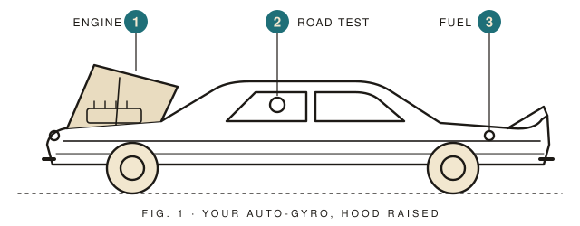
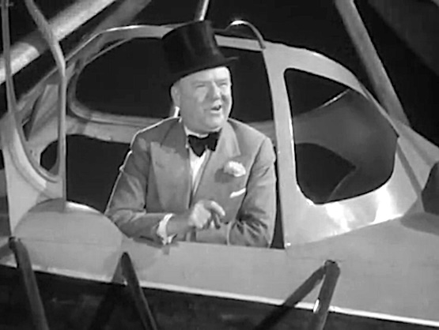

GYR-O Pages · the build
How a GYR-O website gets built, from one sentence to a working address.
The main idea: you never have to know what is under the hood. Domain names, hosting, security certificates, code, publishing: Auto-Gyro handles all of it, the way you drive a car without knowing how the engine works. You say what the site is for and decide what it says; everything technical happens out of sight.
One sentence, the first line of everything. If it is not clear yet, you are asked a few plain questions until it is.
A few words of plain English ending in .online, that read like what the site is: worland-dog-laws.online.
Free, as part of a shared name: your-farm.gyro-sites.online, or under your cooperative’s name if you belong to one. Or your own: about $11–$28 a year, bought in your own account, and yours outright. The only step that can cost money, so it stays yours.
The pages, the hosting, the address and the padlock in the browser bar are set up for you. No server, nothing to log in to, nothing to update.
Seven plain answers to the questions your readers ask, your sources in the middle, the detail last. An AI drafts them with you; you decide what they say.
To change a line, edit it and publish. The words, the look and the address all belong to you.
Steps 1 and 2 above, and nothing else. This page sends nothing and keeps nothing: it writes a short message for you to send to the Site Builder, the person who sets up your site.
One sentence, in your own words. For example: “Hay and beef by the share from our farm east of Worland, by appointment.”
A few plain words joined by hyphens. Letters, numbers and hyphens only; the rest of the address is added for you.
The web address your site will appear at
Create opens your email with the request already written to the Site Builder; press Send. No email on this device? and paste it into a text instead.
Whether the name is free is checked when the site is set up; if it is taken, you are offered the nearest free one before anything is bought. You can move from a shared name to your own later; the site comes with you.
Once a site is up, it is kept the same way every time: one task, one site, one log, shown on the four live GYR-O sites.
Owner’s Manual · Section 1

No owner-serviceable parts inside. Domain registration, hosting, security certificates, code and publishing are factory-installed and maintained by Auto-Gyro. The owner is not required to open the hood at any time.
On completion of generation, the vehicle is released to the owner for a road test (“Test Drive”). Operate every control: open each answer, follow each source card, switch Intro and Info on and off, and read the page as a first-time visitor would. Report any condition requiring adjustment; it is corrected before the vehicle is accepted.
| Fuel type | Attention |
|---|---|
| Tank capacity | One tank per operator per day |
| Refueling | Overnight; not available during operation |
| Principal consumers | Forced detours, expired logins, forgotten passwords, dead links, hunting for the place you left |
WARNING Operating on an empty tank halts progress for the remainder of the day. Exasperation drains the tank fastest. Auto-Gyro is designed to minimize consumption: the information comes to the reader, sources are previewed before departure, and no trip is taken that a card can answer.
NOTE The fuel tank is an analogy, not a measurement. The research claim that self-control runs down over a day (“ego depletion”) failed a large multi-laboratory replication in 2016. What is well established is the cost of each interruption: returning to an interrupted task takes time, and work left unfinished stays on the mind. See interruption-science.online.
— 1 —
GYR-O stands for its colors: green, yellow and red for the three columns every reader sees, and sometimes orange. Orange is the color of the build. On a finished site it appears once, in the “built by Auto-Gyro” link that brought you here.
An autogyro flies on a rotor that the passing air keeps turning, which is close to how a GYR-O site stays up: no engine room, almost no cost. The name also tips its hat to W. C. Fields, who drops in by autogyro in the 1933 screwball comedy International House.
